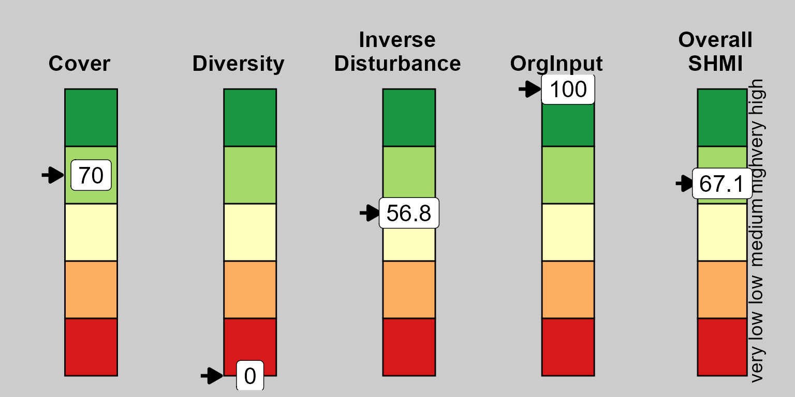
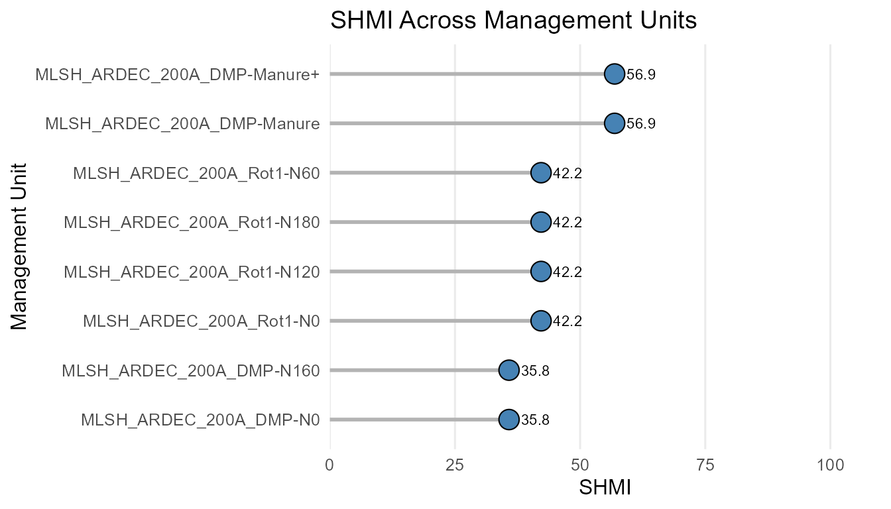

Introduction
The Soil Health Management Index (SHMI) turns a record of field management into a single 0-100 score. It combines four sub-indices, each also scored 0-100:
- Cover: the season-weighted share of days with living plants.
- Diversity: how many crop species were grown, and how evenly, over the rotation.
- Inverse disturbance (InvDist): how little the soil was tilled; 100 means no disturbance.
- Organic inputs (OrgInput): how often organic amendments were applied and animals were present.
This vignette walks through the standard workflow: fill in the Excel workbook, prepare the inputs, compute SHMI, and review the results.
1. Get a workbook
SHMI reads a standard Excel workbook. Start from the blank template, or from a completed example to see how entries should look:
download_shmi_template("SHMI_template.xlsx") # blank
download_shmi_example() # completed exampleThe completed example is also installed with the package, and
get_shmi_example() returns its path. The rest of this
vignette uses it: eight management units from a long-term experiment
(2020-2024), with continuous corn and a rotation under several nitrogen
and manure treatments.
The workbook has one sheet per kind of record, each with column names on the fourth row:
| Sheet | Records |
|---|---|
Mgt_Unit |
Management units (MGT_combo), with study, farm, field,
and treatment |
Crop_Diversity |
Crops: name, category, and plant, harvest, and termination dates |
Soil_Disturbance |
Tillage and other soil-disturbing passes |
Soil_Amendments |
Amendments, including organic inputs |
Animal_Diversity |
Periods with grazing or other animals |
The disturbance, amendment, and animal sheets may be left empty. Each
crop is entered by name with its dates; mixtures are entered as one row
per species. Sequence numbers (CD_seq_num) and mixture
flags (CD_mix) are not needed.
2. Prepare the inputs
inputs <- prepare_shmi_inputs("my_SHMI_inputs.xlsx") # your own workbookWith the installed example:
inputs <- prepare_shmi_inputs(get_shmi_example(), verbose = FALSE)
names(inputs)
#> [1] "rot_bounds" "mgt" "crop" "dist" "amend"
#> [6] "animal" "yield" "n_rate" "assumptions"
head(inputs$crop)
#> # A tibble: 6 × 8
#> MGT_combo episode_id CD_cat CD_name crop_start crop_end start_imputed
#> <chr> <int> <chr> <chr> <date> <date> <lgl>
#> 1 MLSH_ARDEC_200A… 1 Annual Corn 2020-04-27 2020-10-13 FALSE
#> 2 MLSH_ARDEC_200A… 2 Annual Corn 2021-05-08 2021-10-20 FALSE
#> 3 MLSH_ARDEC_200A… 3 Annual Corn 2022-04-27 2022-10-20 FALSE
#> 4 MLSH_ARDEC_200A… 4 Annual Corn 2023-04-24 2023-10-23 FALSE
#> 5 MLSH_ARDEC_200A… 5 Annual Corn 2024-05-01 2024-10-22 FALSE
#> 6 MLSH_ARDEC_200A… 1 Annual Corn 2020-04-27 2020-10-13 FALSE
#> # ℹ 1 more variable: end_imputed <lgl>-
Validates the workbook with
validate_excel_input()and stops with a list of problems if, for example, a required sheet or column is missing, a unit is not listed inMgt_Unit, or a disturbance pass has no date. - Builds crop episodes: one row per species per continuous period of presence. Mixtures, relays, and intercrops are simply overlapping episodes. Harvest rows without a plant date are attached to a standing perennial as cuttings.
- Fills in missing dates, following fixed rules. A crop with no plant date starts where the previous crop ended, or at the start of the record. A crop with no end date ends at the next planting, or at the end of the record.
- Sets the rotation window from the first to the last recorded event.
It returns a list:
| Element | Contents |
|---|---|
rot_bounds |
Rotation start and end for each unit |
mgt |
Management-unit details |
crop |
Species episodes, with crop_start and
crop_end
|
dist, amend, animal
|
Disturbance, amendment, and animal events |
yield, n_rate
|
Yields and nitrogen rates, if requested |
assumptions |
Every date that was filled in, and every value to review |
Reviewing assumptions
Management records are rarely complete, particularly at the start and
end of a record kept by calendar year. Rather than filling gaps
silently, prepare_shmi_inputs() records each
assumption:
table(inputs$assumptions$type)
#> < table of extent 0 >
# Items flagged for review, such as a perennial species entered as an annual
subset(inputs$assumptions, level == "check")
#> # A tibble: 0 × 8
#> # ℹ 8 variables: MGT_combo <chr>, source <chr>, name <chr>, date_start <date>,
#> # date_end <date>, level <chr>, type <chr>, message <chr>Rows with level == "assumption" are routine gap-filling.
Rows with level == "check" usually point to a data-entry
issue worth correcting in the workbook.
?prepare_shmi_inputs describes each type.
Choosing the evaluation window
By default the rotation runs from the first to the last recorded event for each unit. To score a fixed period instead, give start and end dates; events outside the window are dropped, and crops and grazing periods are clipped to it:
inputs_2022_23 <- prepare_shmi_inputs(
get_shmi_example(), verbose = FALSE,
start_date_override = "2022-01-01",
end_date_override = "2023-12-31"
)
inputs_2022_23$rot_bounds
#> # A tibble: 8 × 5
#> MGT_combo rot_start rot_end rot_start_yr rot_end_yr
#> <chr> <date> <date> <dbl> <dbl>
#> 1 MLSH_ARDEC_200A_DMP-Manure 2022-01-01 2023-12-31 2022 2023
#> 2 MLSH_ARDEC_200A_DMP-Manure+ 2022-01-01 2023-12-31 2022 2023
#> 3 MLSH_ARDEC_200A_DMP-N0 2022-01-01 2023-12-31 2022 2023
#> 4 MLSH_ARDEC_200A_DMP-N160 2022-01-01 2023-12-31 2022 2023
#> 5 MLSH_ARDEC_200A_Rot1-N0 2022-01-01 2023-12-31 2022 2023
#> 6 MLSH_ARDEC_200A_Rot1-N120 2022-01-01 2023-12-31 2022 2023
#> 7 MLSH_ARDEC_200A_Rot1-N180 2022-01-01 2023-12-31 2022 2023
#> 8 MLSH_ARDEC_200A_Rot1-N60 2022-01-01 2023-12-31 2022 2023Other options include exclude (leave out some units),
end_at_sample_date (stop each unit at its soil sampling
date), and calc_yield / calc_n_rate (also
return yields in kg/ha and annual nitrogen rates).
3. Compute SHMI
result <- build_shmi(inputs)
result$indicator_df
#> # A tibble: 8 × 10
#> MGT_combo MGT_study MGT_farm MGT_field MGT_trt SHMI Cover Diversity InvDist
#> <chr> <chr> <chr> <chr> <chr> <dbl> <dbl> <dbl> <dbl>
#> 1 MLSH_ARDEC… MLSH ARDEC 200A DMP-Ma… 56.9 62.3 0 55.1
#> 2 MLSH_ARDEC… MLSH ARDEC 200A DMP-Ma… 56.9 62.3 0 55.1
#> 3 MLSH_ARDEC… MLSH ARDEC 200A DMP-N0 35.8 62.3 0 55.1
#> 4 MLSH_ARDEC… MLSH ARDEC 200A DMP-N1… 35.8 62.3 0 55.1
#> 5 MLSH_ARDEC… MLSH ARDEC 200A Rot1-N0 42.2 62.3 0 100
#> 6 MLSH_ARDEC… MLSH ARDEC 200A Rot1-N… 42.2 62.3 0 100
#> 7 MLSH_ARDEC… MLSH ARDEC 200A Rot1-N… 42.2 62.3 0 100
#> 8 MLSH_ARDEC… MLSH ARDEC 200A Rot1-N… 42.2 62.3 0 100
#> # ℹ 1 more variable: OrgInput <dbl>indicator_df has one row per management unit, with
SHMI, Cover, Diversity,
InvDist, and OrgInput, plus the unit’s study,
farm, field, and treatment. The result also records
settings_used, expert_mode,
shmi_version, and a timestamp, so every score
can be traced to how it was computed.
By default, build_shmi() uses the official national
settings. These include the EPA soil-mixing model for
disturbance, which needs a tillage depth (SD_depth, in
inches) for every pass. If your data record STIR values instead of
depths, use expert mode (next section) with
dist_meth = "STIR".
4. Expert mode
For research or scenario analysis, any setting can be changed. Settings you do not supply keep their official values:
# Score disturbance with STIR instead of the EPA model
result_stir <- build_shmi(
inputs,
settings = list(dist_meth = "STIR"),
expert_mode = TRUE
)
# Equal weights throughout
custom <- list(
w_winter = 0.25, w_spring = 0.25, w_summer = 0.25, w_fall = 0.25, # cover
hill = 2, max_div = 16, # diversity
dist_meth = "STIR", max_stir = 400, ti_rep = "mid", # disturbance
w_amend = 0.5, w_animal = 0.5, # organic inputs
w_cover = 0.25, w_diversity = 0.25, w_invdist = 0.25, # SHMI weights
w_orginput = 0.25
)
result_custom <- build_shmi(inputs, settings = custom, expert_mode = TRUE)Setting names must match exactly; ?build_shmi lists them
with their official values. Scores computed in expert mode are
not comparable to the national SHMI scale.
5. How missing records are scored
SHMI treats a missing record as a practice that did not happen:
- No disturbance records means no tillage, so InvDist = 100. This is how continuous no-till is represented.
- No crop on a given day means no cover that day. A fallow reference site scores Cover = 0 and Diversity = 0.
- No amendment or animal records means no organic inputs, so OrgInput = 0.
Record every tillage pass, planting, harvest, and amendment for the period being evaluated, so that gaps in the records are not mistaken for practices.
6. The sub-indices one at a time
Each sub-index can be computed directly from the prepared inputs:
compute_cover(inputs$crop, inputs$rot_bounds)
#> # A tibble: 8 × 2
#> MGT_combo Cover
#> <chr> <dbl>
#> 1 MLSH_ARDEC_200A_DMP-Manure 62.3
#> 2 MLSH_ARDEC_200A_DMP-Manure+ 62.3
#> 3 MLSH_ARDEC_200A_DMP-N0 62.3
#> 4 MLSH_ARDEC_200A_DMP-N160 62.3
#> 5 MLSH_ARDEC_200A_Rot1-N0 62.3
#> 6 MLSH_ARDEC_200A_Rot1-N120 62.3
#> 7 MLSH_ARDEC_200A_Rot1-N180 62.3
#> 8 MLSH_ARDEC_200A_Rot1-N60 62.3
compute_diversity(inputs$crop)
#> # A tibble: 8 × 2
#> MGT_combo Diversity
#> <chr> <dbl>
#> 1 MLSH_ARDEC_200A_DMP-Manure 0
#> 2 MLSH_ARDEC_200A_DMP-Manure+ 0
#> 3 MLSH_ARDEC_200A_DMP-N0 0
#> 4 MLSH_ARDEC_200A_DMP-N160 0
#> 5 MLSH_ARDEC_200A_Rot1-N0 0
#> 6 MLSH_ARDEC_200A_Rot1-N120 0
#> 7 MLSH_ARDEC_200A_Rot1-N180 0
#> 8 MLSH_ARDEC_200A_Rot1-N60 0
compute_disturbance(inputs$dist, inputs$rot_bounds, dist_meth = "EPA")
#> # A tibble: 8 × 2
#> MGT_combo InvDist
#> <chr> <dbl>
#> 1 MLSH_ARDEC_200A_DMP-Manure 55.1
#> 2 MLSH_ARDEC_200A_DMP-Manure+ 55.1
#> 3 MLSH_ARDEC_200A_DMP-N0 55.1
#> 4 MLSH_ARDEC_200A_DMP-N160 55.1
#> 5 MLSH_ARDEC_200A_Rot1-N0 100
#> 6 MLSH_ARDEC_200A_Rot1-N120 100
#> 7 MLSH_ARDEC_200A_Rot1-N180 100
#> 8 MLSH_ARDEC_200A_Rot1-N60 100
compute_orginput(inputs$rot_bounds, inputs$amend, inputs$animal)
#> # A tibble: 8 × 2
#> MGT_combo OrgInput
#> <chr> <dbl>
#> 1 MLSH_ARDEC_200A_DMP-Manure 66.1
#> 2 MLSH_ARDEC_200A_DMP-Manure+ 66.1
#> 3 MLSH_ARDEC_200A_DMP-N0 0
#> 4 MLSH_ARDEC_200A_DMP-N160 0
#> 5 MLSH_ARDEC_200A_Rot1-N0 0
#> 6 MLSH_ARDEC_200A_Rot1-N120 0
#> 7 MLSH_ARDEC_200A_Rot1-N180 0
#> 8 MLSH_ARDEC_200A_Rot1-N60 0The functions also accept small tables built by hand, which is a quick way to see how each one responds to a change in management. Here is one field over two years: corn followed by a cereal rye cover crop, then soybean.
crop <- data.frame(
MGT_combo = "field_1",
CD_name = c("Corn", "Rye", "Soybean"),
crop_start = as.Date(c("2019-05-01", "2019-10-15", "2020-05-10")),
crop_end = as.Date(c("2019-09-30", "2020-04-20", "2020-09-25"))
)
rot_bounds <- data.frame(
MGT_combo = "field_1",
rot_start = as.Date("2019-01-01"),
rot_end = as.Date("2020-12-31"),
rot_start_yr = 2019,
rot_end_yr = 2020
)Cover is the season-weighted share of days with a living crop. The rye covers most of the winter and spring:
compute_cover(crop, rot_bounds)
#> # A tibble: 1 × 2
#> MGT_combo Cover
#> <chr> <dbl>
#> 1 field_1 71.9Diversity uses the number of days each species was present. Three species, present for unequal lengths of time:
compute_diversity(crop)
#> # A tibble: 1 × 2
#> MGT_combo Diversity
#> <chr> <dbl>
#> 1 field_1 47.3Inverse disturbance here uses STIR values, a disk harrow before corn and a planter pass each year. The 2019 total is much larger, so 2019 scores lower than 2020, and the rotation score is the mean of the two years:
dist <- data.frame(
MGT_combo = "field_1",
SD_date = as.Date(c("2019-04-20", "2019-05-01", "2020-05-10")),
SD_mixeff = c(39, 2.4, 2.4)
)
compute_disturbance(dist, rot_bounds, dist_meth = "STIR")
#> MGT_combo InvDist
#> 1 field_1 92.3Organic inputs: manure applied in one of the two years, and no animals:
amend <- data.frame(MGT_combo = "field_1",
SA_date = as.Date("2019-04-01"), SA_cat = "Organic")
animal <- data.frame(MGT_combo = character(),
AD_start_date = as.Date(character()))
compute_orginput(rot_bounds, amend, animal)
#> # A tibble: 1 × 2
#> MGT_combo OrgInput
#> <chr> <dbl>
#> 1 field_1 33.17. Plotting results
One unit, with a gauge for each sub-index and for overall SHMI:
plot_shmi_gauge(result$indicator_df, row = 1)
Many units, overall SHMI sorted by score:
plot_shmi_lollipop(result$indicator_df)
Select a unit by name with MGT_combo = "..." instead of
row.
8. Interpreting SHMI
Higher scores indicate management that is more supportive of soil health: more of the year under living cover, a more diverse rotation, less soil disturbance, and more frequent organic inputs.
When comparing units, keep the weights in mind. Under the official settings, Cover carries about 45 percent of the weight and Organic Inputs about 32 percent. A unit with no organic inputs therefore cannot score above about 68, even with perfect cover, diversity, and no tillage. Looking at the four sub-indices alongside SHMI shows which practices drive a unit’s score.
Further reading
-
?prepare_shmi_inputs: workbook structure, crop-date rules, the assumptions table, and overrides. -
?build_shmi: official settings and expert mode. -
?compute_cover,?compute_diversity,?compute_disturbance,?compute_orginput: how each sub-index is calculated.